Обзор
На этой странице будет описан конвейер Maya для получения растительных ресурсов с сенсорным сгибанием в CRYENGINE.
Система сенсорного изгиба используется для имитации деформирующейся растительности. Требуется, чтобы ваша геометрия имела чистые UV-развертки. Физика сенсорного изгиба основана на смоделированных цепях суставов или ветвей, которые отмечены локаторами, привязанными к вершинам (и их UV) геометрии растительности, например листья. Всякий раз, когда геометрия листа (вместе с его Uvs) дублируется, топология не меняется. Таким образом, каждый дублированный лист может использовать одну и ту же деформирующую шарнирную цепь/ветвь. Это сэкономит вам массу усилий в процессе крепления листьев/веток.

Рис. 1: Сенсорный изгиб в действии (с отображением информации об отладке физики: F10 или p_draw_helper=1)
Учебные файлы
Исходная сцена Maya с экспортированными файлами CRYENGINE:
Предварительные требования для этого урока
Прежде чем продолжить изучение этого руководства, убедитесь, что вы прочитали и поняли следующее:
- Как установить CryMayaTools
- Основной рабочий процесс CRYENGINE Maya
- CRYENGINE Экспортер
- Масштаб единиц измерения Maya соответствует системе единиц измерения CRYENGINE
Полезная информация
При работе над активом обязательно помните о следующих вещах:
- Вы можете смешивать систему растительности, чтобы иметь Сенсорный изгиб и Детальная гибка наряду с воздействием на Окружающая среда Ветер система.
- Сенсорный изгиб следует использовать только на больших объектах (кусты, папоротники, деревья и т. д.). Это позволяет выдающейся растительности взаимодействовать с игроком и другими AI.
- А бесстолкновительный прокси Для работы этой системы необходима правильная настройка материала.
- Изгиб касанием можно активировать только в пределах зоны отсутствия столкновений (деактивируется примерно через 5 секунд, если не происходит взаимодействия AI/игрока)
- Локаторы сенсорных сгибающих костей работают только при:
- Они следуют соглашению об именах, принятому Объединенная сетка учебник: branch1_1 чтобы branch1_#, от branch2_1 до branch2_#и т. д. для каждого листа/ветви. Замените # подпишите номером.
- Они должны быть родительскими под каждой сеткой листьев.
- Они привязаны к вершинам геометрии листа (нажмите и удерживайте В-ключ в Maya).
- Порядок вашей экспортной иерархии имеет значение. Не размещайте сенсорный гибкий прокси перед вашими листовыми сетками, но он должен быть последним в иерархии.
- Не Заморозить трансформацию на объектах сетки листьев. Это не позволяет CRYENGINE определить экземпляр (дублирование) листа. Вы можете свободно перемещать/вращать/масштабировать сетки или использовать любые деформаторы Maya для создания разновидностей.
- Для каждой ветки необходимо использовать минимум три манекена. Старайтесь не превышать это число, поскольку трех достаточно почти для всех ситуаций.
- Используйте CVar p_draw_helpers=1 или F10 в игре для визуализации информации об отладке физики.
Первоначальная настройка Maya
В этом уроке мы будем создавать наш ресурс в следующем каталоге.
<GameFolder>\Objects\tutorial\vegetation\04\touch_bending\
Для начала мы сохраняем нашу сцену Maya в этом месте. Все наши экспортированные ресурсы будут сохранены там. Некоторые из текстур, которые мы используем, взяты из существующего актива, а местоположение существующего актива будет указано позже в руководстве.
Мы продолжим исходить из предположения, что вы уже создали основы ресурса, поскольку это не учебник по моделированию Maya. Мы начнем с подготовки ресурса для CRYENGINE, назначив шейдеры соответствующим полигонам.
Вы также можете использовать файлы сцен из предыдущего урока по растительности (детализированному изгибу). Вы можете комбинировать гибку деталей и гибку касанием, которую мы собираемся настроить.
Материал
Как и в предыдущих уроках по растительности, мы должны создать пустой объект. Группа материалов и назначить ему шейдеры Maya. На этот раз нам нужны два шейдера: один для растительности и один для сетки прокси активации. Предоставьте группе материалов и ее шейдеру подходящие имена, чтобы вы могли найти их позже, используя это имя. Возможно, вам захочется уменьшить непрозрачность прокси-шейдера, чтобы его можно было легко обнаружить.
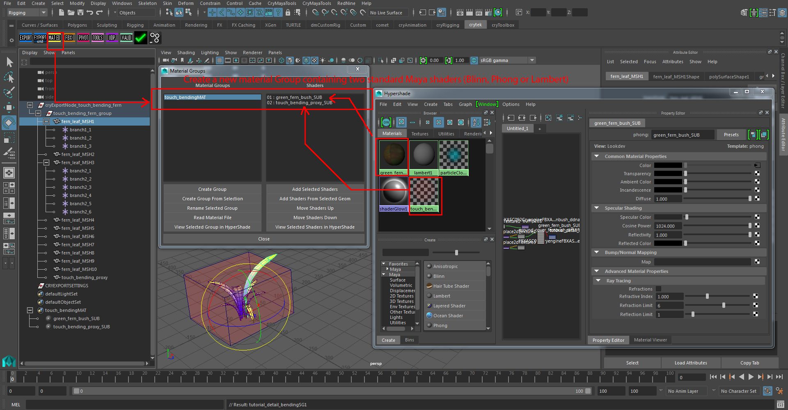
Рис2: Настройка материала
листья папоротника ID настройка шейдера "01"
Ваш шейдер с ID 01 является материалом для листьев папоротника. Подробная настройка материала будет показана в следующем разделе руководства, где мы обсудим настройку в CRYENGINE. Вы можете загрузить эти две текстуры в слот карты цветных текстур для визуальной обратной связи в 3D-окне просмотра Maya. ТСледующие текстуры уже включены в сборку CRYENGINE:
<Your_Project>\Assets\objects\natural\bushes\ground_cover_fern\ground_cover_fernbush_diff.tif><Your_Project>\Assets\objects\natural\bushes\ground_cover_fern\ground_cover_fernbush_ddna.tif>
touch_bending_proxy ID Настройка шейдера "02"
Для активации растительности, сгибающей касание, мы обычно создаем прокси-сетку из специального материала. В Maya нам нужно добавить Дополнительный атрибут в ваш прокси-шейдер ( ID 02).
- Перейти к Крайтек полку, нажмите кнопку Экспорт значок полки, чтобы открыть CryMayaExporter.
- Выберите ID 02 шейдер.
- Вверху выберите значок Добавить атрибут кнопка, которая добавит Физическая реализация дополнительного атрибута для метаданных материала CRYENGINE.
- Открыть Maya Редактор атрибутов (CTRL-А) с ID 02 выбран шейдер. В нижней части вы найдете Дополнительный атрибут -> Физическая реализация: NoCollide.
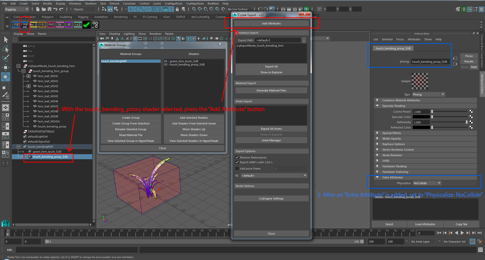
Рис.3: Настройка прокси-шейдера для активации сенсорного изгиба.
В отличие от другого варианта физикализации, с которым вы, возможно, знакомы, Физическая реализация: NoCollide, это не блокирует игрока, а только определяет, есть ли что-то внутри.
Экспортируйте материал
Если у вас все еще есть CryMayaExporter окно открыто, пожалуйста, нажмите на Создать файлы материалов кнопка для экспорта CRYENGINE *.MTL файл.
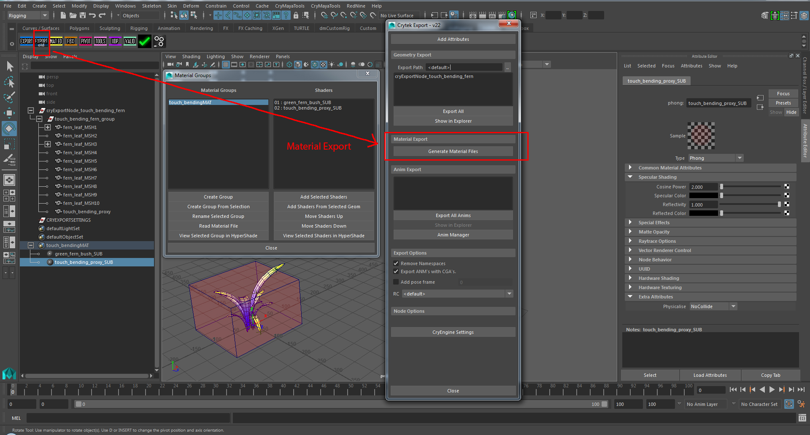
Рис.4: Экспорт материала в CRYENGINE.
Геометрия
Поскольку у нас созданы два материала/шейдера, мы можем приступить к процессу создания геометрии:
- Дублирование сетки листа с эталонного листа.
- Создание сетки прокси активации для сенсорного изгиба.
Объяснение сенсорного изгиба
- Как уже говорилось в разделе «Полезная информация» выше, CRYENGINE использует одну или несколько сеток листьев, на которые имеются ссылки, с привязанными локаторами к их вершинам (и соответствующими UV-развертками), чтобы построить растительность, изгибающуюся при касании. Этот объект эталонной сетки выбирается из иерархии на основе его ветка#_# детские локаторы. В вашем Maya cryExportNode вам разрешено иметь несколько сеток эталонных листьев с одинаковым/разным количеством ветка#_# локаторы.
- Вы можете дублировать свою ссылку столько раз, сколько пожелаете, но никогда Заморозить преобразование дублированные сетки листьев. Вы можете использовать любые средства, Maya позволяет придавать форму дублированным листьям (решетка, скульптура, нелинейность и т. д.) деформеры + Удалить историю после того, как вы придали форму), чтобы создать разнообразие.
- Вам необходимо создать ветка#_# локаторы для вашей эталонной листовой сетки только один раз. Всякий раз, когда вы создаете новый branch2_1 чтобы branch2_3, CRYENGINE будет рассматривать это как новую сетку опорного листа.
- Деформация (изгиб суставной цепи) происходит только тогда, когда AI, физикализированные объекты или игрок перемещаются в границу прокси-меша.
- Никакие эффекты окружающей среды не вызовут деформацию, кроме AI, игрока или любых физических объектов.
Соглашение об именах ветвей
Как уже упоминалось,
- Переименуйте локаторы в branch1_1 чтобы branch1_#, где # не менее 3. Эти локаторы образуют цепочку изгибающих суставов, которая деформирует сетку листа.
- Каждый новый номер филиала, например. начиная с ветка#_1, создаст новый справочный лист. Следовательно, вам необходимо создать branch1_1 чтобы branch1_# дочерние локаторы для ссылочного листа только один раз.
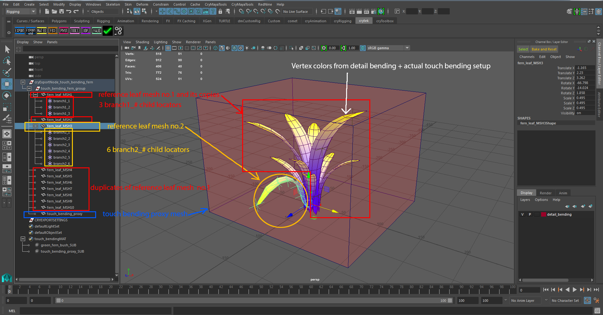
Рис5: Один из примеров окончательной экспортируемой иерархии в Maya.
Добавьте эталонный объект сетки листа и создайте UV-развертки.
Используя предоставленную диффузную текстуру папоротника и/или сетку листьев из предыдущего урока по растительности (детальный изгиб), вы можете легко смоделировать геометрию и правильно расположить UV-развертки листьев папоротника.
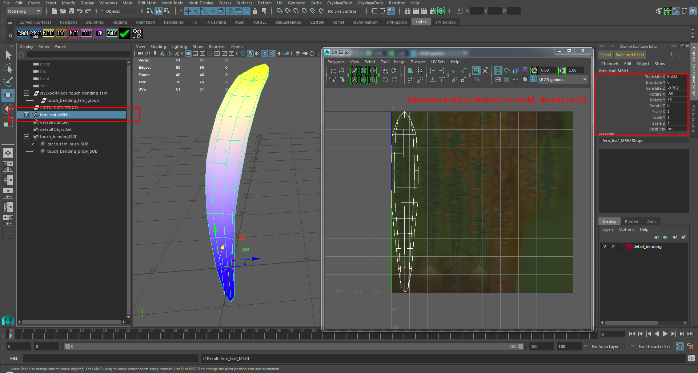
Рис6: Простая сетка листьев.
Добавление и привязка локаторов к вершинам опорного листового объекта.
Создать три Локаторы и вершина привязывается к одному локатору (оставьте В клавиша, нажатая в Maya при перемещении локаторов) к вершине внизу, в центре и вверху сетки листа. Переименуйте локаторы в branch1_1 (внизу), branch1_2 (центр), branch1_3 (вверху). Как упоминалось ранее, у вас должно быть как минимум три Локаторы для филиал генерация сплайн/костной цепи. Добавление большего количества локаторов улучшит деформацию, но в большинстве случаев трех локаторов будет достаточно.
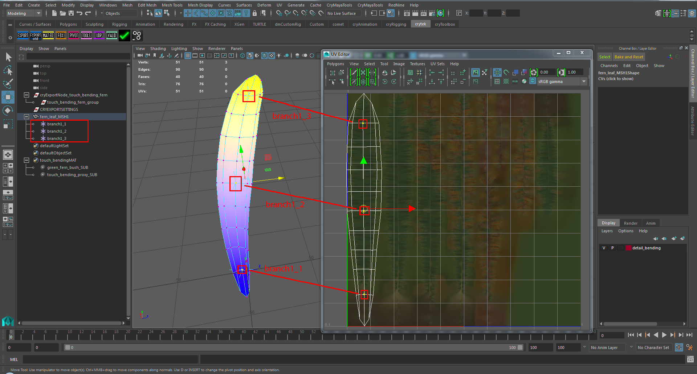
Рис.7: локаторы вершин привязываются к вершинам сетки и используют соглашение об именах «branch#_#».
Дублируйте лист, чтобы построить куст.
Вам нужно продублировать эталонную сетку листа, чтобы придать форму кусту папоротника. Вам разрешено перемещать, вращать и масштабировать дублированную сетку под именем long, поскольку вы не меняете их топологию и UV-развертку. Итак, вы можете использовать любой Maya Деформаторы (Нелинейные деформаторы, Проволока, Решетка, Мягкая модификация) на дублированных листьях. В нашем случае мы использовали только три стандартных преобразования.
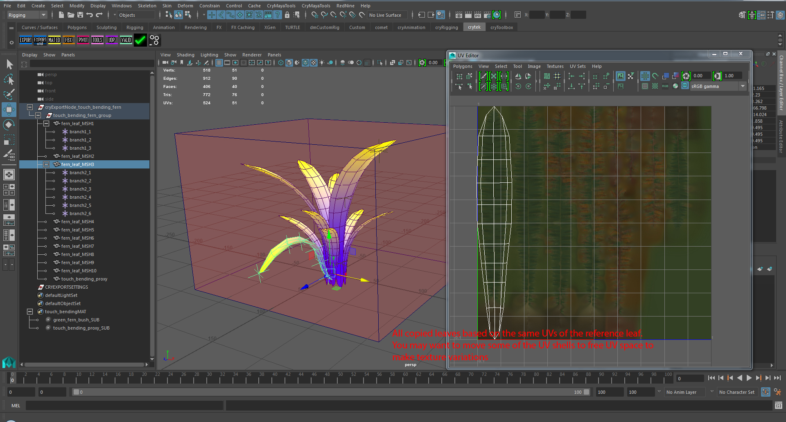
Рис.8: дублированные сетки листьев, включая их дочерние локаторы.
Добавление вариаций к геометрии листьев
Модификации без потери экземпляров:
Есть способы внести изменения в ваш справочный лист, не теряя преимуществ создания экземпляров в CRYENGINE:
- Использование деформаторов Maya и стандартных преобразований (перемещение/поворот/масштабирование) для изменения формы листа.
- Перемещение отдельных вершин дублированных мешей листьев для создания новой формы без изменения их UV. Однако это приведет к растяжению текстуры, если вы не будете осторожны.
- Удаление нескольких граней дублированных листьев разрешено, long, если вы не переусердствуете, например, разбивая оболочку UV на части. Их оболочки UV должны оставаться в том же пространстве UV.
Если вы полностью нарушите геометрию листьев (удалите все полигоны посередине) для создания двух отдельных островов UV, это также нарушит сенсорный изгиб этого листа.
Модификации, которые нарушат создание экземпляров:
С этими изменениями вы потеряете преимущество в производительности при создании экземпляров из эталонной конечной сетки. С помощью этих изменений вы можете либо создать новую ветку, либо ваша сетка листа не будет сгибаться при касании, а останется static.
- Перемещение/поворот/масштабирование UV приведет к нарушению создания экземпляров. Если вам по-прежнему нужен сенсорный изгиб, вам необходимо добавить новый ветка#_# детские локаторы.
- Из-за модификаций моделирования вы хотите добавить больше ветка#_# локаторы, чтобы сгенерированная шарнирная цепь/веревка лучше соответствовала новой форме листа. Здесь вы должны увеличить индекс ветки, например. branch1_# следует переименовать в branch2_#.
- Добавление/удаление/свертывание новых вершин/ребер/граней, чтобы изменить UV-развертку листа.
Ниже мы покажем вам несколько полезных примеров того, как вы можете добавить больше разнообразия к своей растительности, изгибающей прикосновением.
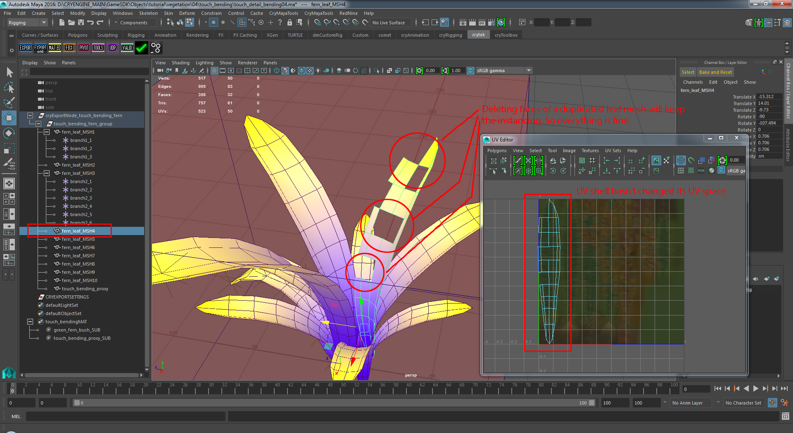
Рис.9: Пример неразрушающих модификаций создания экземпляров: удаление граней.
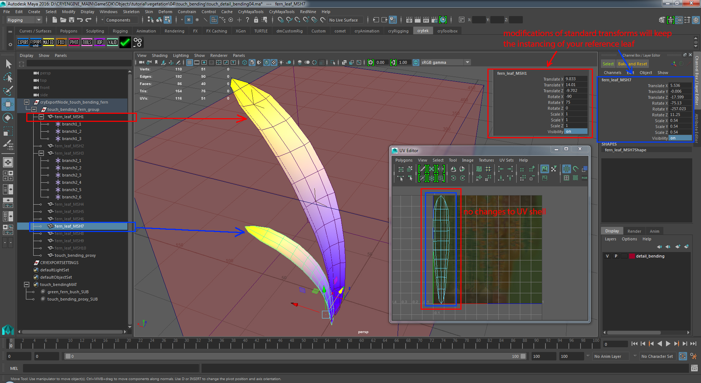
Рис.10: Пример неразрушающих модификаций создания экземпляров: стандартные преобразования (перемещение/поворот/масштабирование).
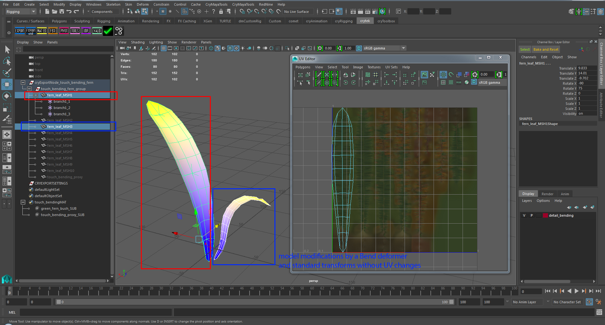
Рисунок 11: Пример неразрушающих модификаций создания экземпляров: деформатор изгиба и стандартные преобразования (перемещение/поворот/масштабирование).
В тех случаях, когда вы хотите добавить к листу варианты текстуры, вам придется создать новую сетку эталонного листа. Если вы не хотите, чтобы это был static, вам нужно добавить новый ветка#_# локаторы.
Из-за различий в текстурах вам придется переместить UV в новое текстурное пространство. На предоставленной карте текстур папоротника имеется шесть вариантов текстур. Кроме того, вам, возможно, придется создать новую топологию сетки и UV. Рассмотрите возможность создания ветка#_# дочерние локаторы и родительские их под новым узлом эталонной листовой сетки. В противном случае эти листья не будут изгибаться.
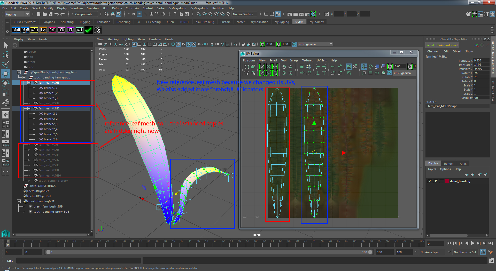
Рис. 12. Пример изменений, при которых вы теряете создание экземпляров: добавление дополнительных локаторов «branch#_#» и/или перемещение UV.
Добавление прокси-геометрии Touch Bending (tb_proxy)
Сенсорный изгиб использует прокси-геометрию, которая активируется, когда AI, игрок или любые физические объекты находятся в пределах его границ. Мы уже создали шейдер с Физическая реализация: NoCollide под Дополнительный атрибут. Чтобы завершить создание прокси, мы сделаем коробку как можно плотнее, чтобы покрыть геометрию растительности.
- Назначьте созданный ранее прокси-шейдер прокси-сетке сгибания при касании.
- Сгруппируйте геометрию прокси под *_group узел. Лучше всего переместить его на последнее место в иерархии, как показано на рисунке. Рис5.
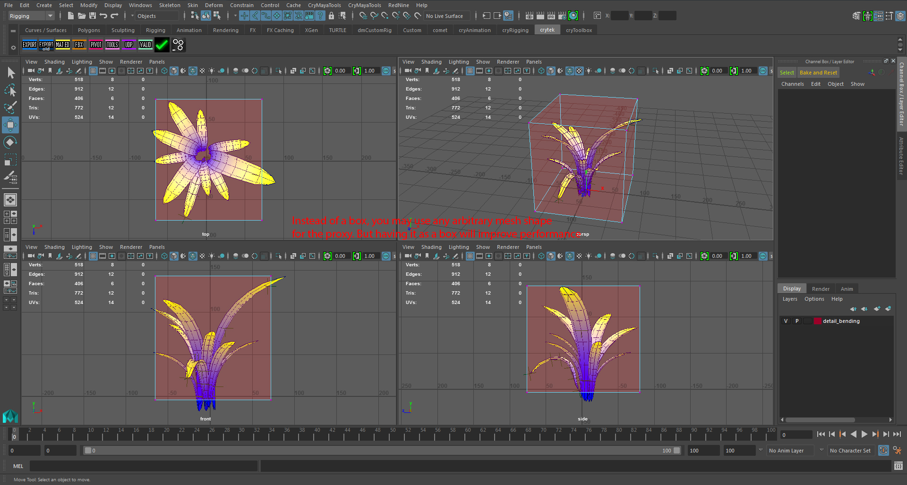
Рис. 12. Прокси-геометрия для запуска физики сенсорного изгиба.
На картинке выше обратите внимание, как touch_bending_proxy геометрия не полностью покрывает все листья. Это специально. Это оптимизация, в которой мы позволяем игроку приблизиться к кусту, но не активируем листья сгибанием касанием.
Помните, что игрок должен войти в tb_proxy для активации сенсорного изгиба. Это не обязательный шаг, он не является обязательным, но в нашей практике мы обнаружили, что это оптимальная настройка при создании актива.
Настройка местоположения геометрии растительности
Чтобы куст вписался в сцену, когда мы перемещаем объект растительности на уровень, рекомендуется немного переместить растительность вверх, чтобы основание растения фактически оказалось под поверхностью ландшафта. Это позволяет избежать возможности увидеть зависшую в воздухе нижнюю часть куста.
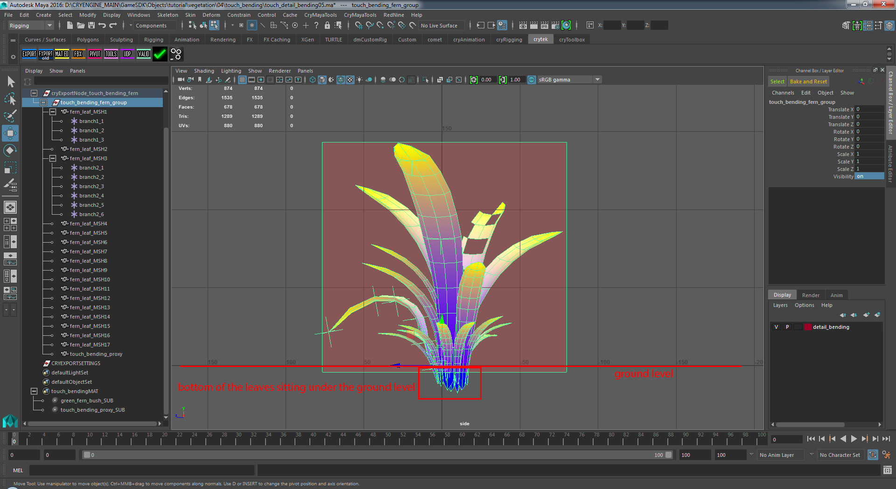
Рис13: Размещение актива на сцене
Добавление дополнительных листьев без сенсорного сгибания
В качестве дальнейшей оптимизации куста не каждый лист должен быть связан с веткой. В общем, мы стараемся стремиться к соотношению физикализованных и нефизизированных ветвей примерно 50/50. Но все зависит от того, как выглядит актив. Предпочтительно, чем меньше физикализованных ветвей, тем лучше (меньше CPU нагрузки), но вам нужно, чтобы их было достаточно, чтобы ассет выглядел реалистично и вел себя хорошо. Он основан на вашем суждении о том, сколько листьев вы материализуете в активе.
Когда вы говорили о вариантах листьев, мы уже упоминали, как можно получить листья static, не сгибая их касанием. Вам просто нужно переместить UV-развертку этих листьев в новое пространство UV/текстуры, не создавая новых. ветка#_# локаторы. При преобразовании UV-разверток убедитесь, что они соответствуют новой текстуре папоротника на вашей карте.
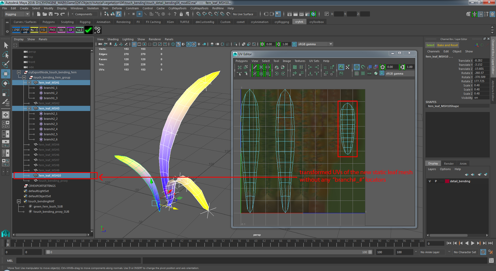
Рис. 14. Никакого сенсорного изгиба из-за разных координат UV и отсутствия локаторов ветвей.
Экспортируйте геометрию
Перейти к Крайтек полку в Maya и запустите Инструмент значок полки. Вы можете создать cryExportNodes и его группы с этим Инструмент скрипт, или вы просто создаете пустые группы, называете их сами. Убедитесь, что у вас есть правильно названный cryExportNode_* и ребенок *_group где звездочка * это имя вашего актива.
Мы также включили функцию изгиба деталей из последнего урока по растительности в нашу финальную сцену экспорта.
Вот пример того, как может выглядеть ваш конечный актив.
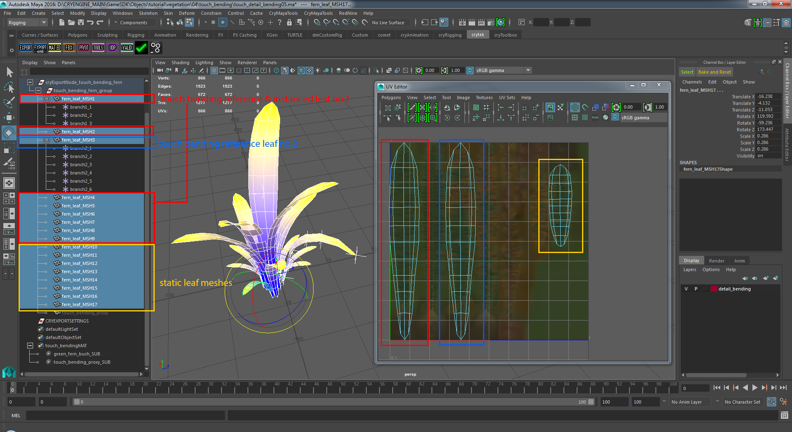
Рис.15: Конечный актив
Продолжить CRYENGINE
Мы завершили настройку 3dsMax части руководства. Чтобы продолжить, перейдите на следующую страницу, где мы настраиваем материал и используем инструмент «Растительность», чтобы разместить некоторые из этих ресурсов сенсорного изгиба.